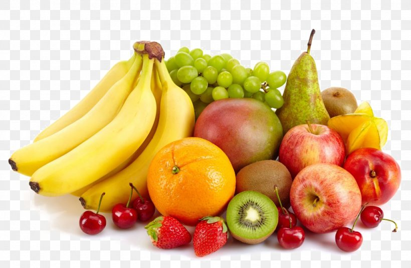

Full Stack Development program is interesting and educating. It is a journey I have come to understand that it is quite assiduous, and is always captivating. I am happy for this journey, most especially being part of the CapacityBay family and community. Anyone can decide to do a personal study, which is still good, but learning with a team opens one up to different types of knowledge, ideas, and these make what is learnt a lasting knowledge. A lot of things interest me, and one of the intriguing thing has always being the patience the Faculties while teaching. They amaze me with their calmness and ability to carry everyone along, making sure nobody was left behind. Our classes for that reason is always wonderful, and I really appreciate everyone of them. Sure, we are still scratching the surface, but I’m hopeful to work hard and get to the finish line. We are now almost done with HTML, more languages are still in the cooler; JavaScript, CSS, etc., I believe we (students) are expectant and excited. I look forward to enjoying every bit of it.
Greatest Love of all - Prince Chike

The 25 Healthiest Fruits You Can Eat, According to a Nutritionist
What I need to do is of great work, very clear and explicit.
I have an important announcement to make.
The Professor mentioned a book tittled Gualivers Travels.
I will give him a run for that position, tell Richard I said so.
Remember to come with your partner, I know she loves Fashion Shows.
I hope making this part of the text smaller will remind you.
It is better we go for bruch, breakfast since we are running late already.
We need to assess who the right candidate is, before we take our stand.
What value will this give us: 1293
And what about this: 433